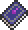

Demon Scythe
| Demon Scythe | |
|---|---|
|  | |
| Statistics | |
| Type | Weapon |
| Damage | 35 |
| Max stack | 1 |
| Mana | 18 |
| Shoot speed | 0.2 |
| Rarity | Orange |
| Use time | 19 (Very Fast) |
| Tooltip | Casts a demon scythe |
| Sell | 20 |
The Demon Scythe is a Magic Weapon that fires circular projectiles that can shoot through multiple enemies for repeated hits, making it useful for mob control. These projectiles have little to no movement for the first second or two, then gradually gain speed. The Demon Scythe has a 2% (1:50) chance of being dropped by Demons in The Underworld.
Tips
- The slow speed allows for the user to lay temporary traps. If you are fighting worm monsters, get into a position where you know they will jump up at you from below. Aim in the rough direction you think the worm will travel and fire off a few scythes before moving out of the way. This can cause extreme amounts of damage, and even kill a Bone Serpent with just a few scythes.
- Flying creatures can easily become annoying as they swarm you, like the Hellbat. The best way to kill them with one scythe is to wait for them to get close to you, then fire a scythe just before they get in close enough to damage you. The scythe will damage/knock them back, and if flying at the right angle, will ram into them again, killing them instantly.
- This weapon is also extremely useful when dealing with the Blood Moon or Goblin Army. Using the same technique above, you can go on an easy killing rampage if you are on flat surfaces.
- It is possible that the Demon Scythe can go across the whole map if nothing is in its way.
Notes
- The Demon Scythe's projectile can travel through a 1-block gap.
Trivia
- Possibly a reference, much like the demon itself, to the Castlevania series' "Imp" enemies who shoot a similar projectile with a similar delay at the start. It may also be a reference to Death's attack in the same series.
History
- 1.0.5: Introduced.